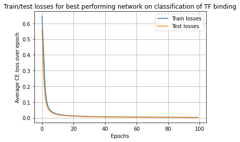

from numpy.typing import ArrayLikefrom typing import List, Unionimport itertoolsimport numpy as npfrom sklearn import datasetsfrom nn import nn, preprocess, ioimport matplotlib.pyplot as plt
Step 2: generate your autoencoder
Read in toy digits dataset
Code
digits = datasets.load_digits()x = digits['data']
Generate a train/test split
Code
def train_test_split( x: Union[List[Union[float, int]], ArrayLike], y: [Union[List[Union[float, int]], ArrayLike]], test_ratio: float=0.3,):""" Generates a training and testing split with test ratio `test_ratio' for the provided x and y labels """assertlen(x) ==len(y), 'x and y lists are not equal length' xypairs =list(zip(x, y)) # stick x and y into a list lists test_sz =int(len(x) * test_ratio) all_indices = np.arange(len(x)) test_indices = np.random.choice(all_indices, size=test_sz, replace=False) # randomly sample indices train_indices = [ind for ind in all_indices if ind notin test_indices] x_test, y_test, x_train, y_train = [], [], [], []# add random indices for train/test to appropriate listsfor ind in test_indices: x_test.append(xypairs[ind][0]) y_test.append(xypairs[ind][1])for ind in train_indices: x_train.append(xypairs[ind][0]) y_train.append(xypairs[ind][1])return x_train, y_train, x_test, y_test
I chose to implement a grid search over some possible hyperparameter settings for this task
I trained a model for each hyperparameter combination and then chose the one with the best validation loss
We want to use mean squared error loss because for the autoencoder task we want to learn a representation that can be used to reconstruct the original data pixel intensities
test_losses_grid = {}models_grid = {}for grid_combination in itertools.product(lr_grid, bs_grid, epochs_grid): # loop over all combinations lr, bs, epochs = grid_combination network = nn.NeuralNetwork(arch, lr, seed, bs, epochs, 'mse', activations=['sigmoid', None]) # intuitively i dont think we want to 0-1 bound the predictions, although probably doesn't matter all that much train_losses, test_losses = network.fit(x_train, y_train, x_test, y_test) last_test_loss = test_losses[-1] # for recording in dict# code does this but wanted to make it clear to reader losses are stored as attr network.train_losses = train_losses network.test_losses = test_losses grid_key = (lr, bs, epochs) test_losses_grid[grid_key] = last_test_loss models_grid[grid_key] = network
Code
best_grid_param =min(test_losses_grid, key=test_losses_grid.get) # get hparam key with best lossbest_loss_val = test_losses_grid[best_grid_param] # get best lossbest_network = models_grid[best_grid_param] # get best model
Plot training and testing loss per epoch
Code
plt.plot(best_network.train_losses, label='Train losses')plt.plot(best_network.test_losses, label='Test losses')_ = plt.title('Train/test losses for best performing network')_ = plt.grid()_ = plt.legend()_ = plt.xlabel('Epochs')_ = plt.ylabel('Average MSE loss over epoch')
Quantify your average reconstruction error over the dataset
Code
loss_across_dataset = best_network._eval_loader(x, x, train=False)loss_across_dataset = np.round(loss_across_dataset, 3)print(f'Average loss across dataset: {loss_across_dataset}')
Average loss across dataset: 7.945
Step 3: generate your transcription factor classifier
Read in data
Code
positive_examples = io.read_text_file('data/rap1-lieb-positives.txt')negative_examples = io.read_fasta_file('data/yeast-upstream-1k-negative.fa')len_positives =len(positive_examples[0])# generate three subsequences of length same as positive examples from each negative sequence to make sure all data X's are same lenn_subseq_per_negative =3negative_examples_subseq = []for example in negative_examples: possible_indices = np.arange(len(example) + len_positives -1) # get all indices that can produce a sequence of appropriate length random_start_indices = np.random.choice(possible_indices, size=n_subseq_per_negative, replace=False) # chose n_subseq_per_negative from ^for random_start in random_start_indices: negative_examples_subseq.append(example[random_start: random_start+len_positives]) # add to negative_examples_subseq
Resample to have equal class balance
Code
# stick pos and negative examples together (3 subsequences per regular negative example)all_examples = [positive_examples + negative_examples_subseq, [0] *len(positive_examples) + [1] *len(negative_examples_subseq)] resampled_seqs, resampled_labels = preprocess.sample_seqs(*all_examples) # resample to equal class balanceresampled_seqs_ohe = preprocess.one_hot_encode_seqs(resampled_seqs) # OHE the sequenecsassertlen(set(len(seq) for seq in resampled_seqs_ohe)) ==1# all same length OHE's
Convert labels to OHE
Code
resampled_labels_ohe = np.zeros((len(resampled_labels), 2))# convert one dim class indicator vector (n x 1) to two dim OHE (n x 2)for idx, label inenumerate(resampled_labels):if label ==0: resampled_labels_ohe[idx, label] =1else: resampled_labels_ohe[idx, label] =1assertlen(resampled_labels) == resampled_labels_ohe.sum(1).sum() # make sure the rows (data points) only have one label
Generate train/test split
Code
x_train, y_train, x_test, y_test = train_test_split(resampled_seqs_ohe, resampled_labels_ohe)arch = [{'input_dim': 68, 'output_dim': 34}, {'input_dim': 34, 'output_dim': 2}] # no particular reason why hidden layer has to be 34seed =0
# see corresponding cell above for the autoencoder task for further explanation clf_test_losses_grid = {}clf_models_grid = {}for grid_combination in itertools.product(lr_grid, bs_grid, epochs_grid): lr, bs, epoch = grid_combination network = nn.NeuralNetwork(arch, lr, seed, bs, epochs, 'ce', activations=['sigmoid', 'sigmoid']) train_losses, test_losses = network.fit(x_train, y_train, x_test, y_test) last_test_loss = test_losses[-1]# code does this but wanted to make it clear to reader losses are stored as attr network.train_losses = train_losses network.test_losses = test_losses grid_key = (lr, bs, epoch) clf_test_losses_grid[grid_key] = last_test_loss clf_models_grid[grid_key] = network
Code
best_grid_param_clf =min(clf_test_losses_grid, key=clf_test_losses_grid.get) # get hparams key with lowest lossbest_loss_val_clf = clf_test_losses_grid[best_grid_param_clf] # get best lossbest_network_clf = clf_models_grid[best_grid_param_clf] # get best models
Choice of loss function:
I chose to use cross entropy loss because we want this neural network to output probabilities over the two classes during prediction
Code
plt.plot(best_network_clf.train_losses, label='Train losses')plt.plot(best_network_clf.test_losses, label='Test losses')_ = plt.title('Train/test losses for best performing network on classification of TF binding')_ = plt.grid()_ = plt.legend()_ = plt.xlabel('Epochs')_ = plt.ylabel('Average CE loss over epoch')

Print out accuracy on test set
Code
preds = network.predict(np.array(x_test)).argmax(1) # one dim vector of class pred 0's and 1'sy_test_gt = np.array(y_test).argmax(1)accuracy = np.isclose(preds, y_test_gt).sum() /len(preds)print(f'Accuracy for test set: {accuracy.round(3)}')